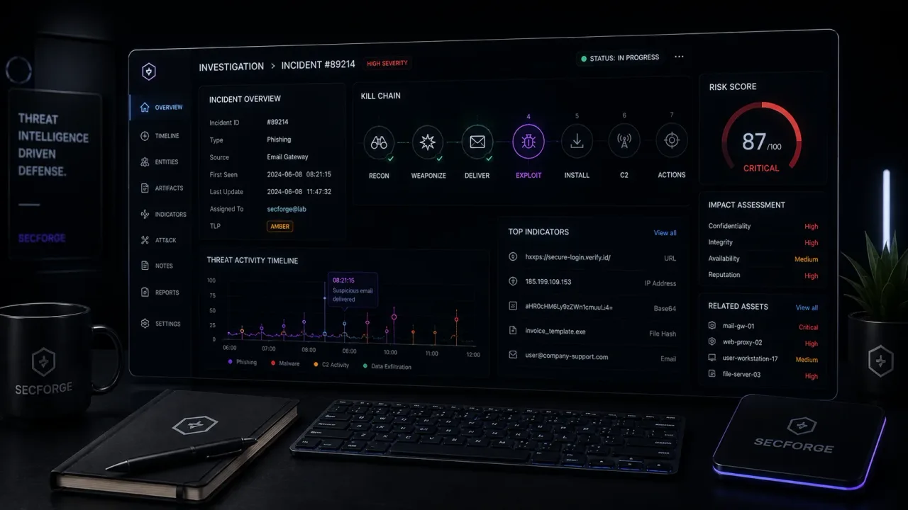
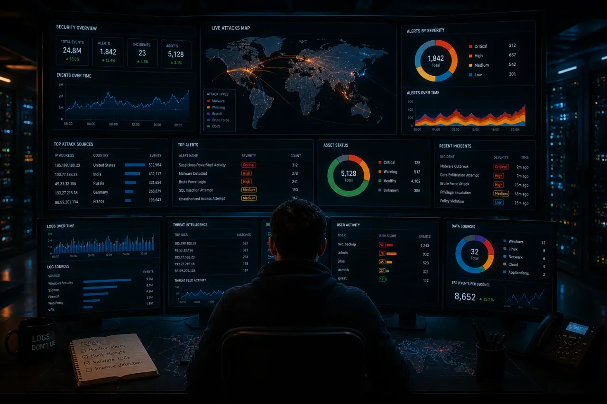
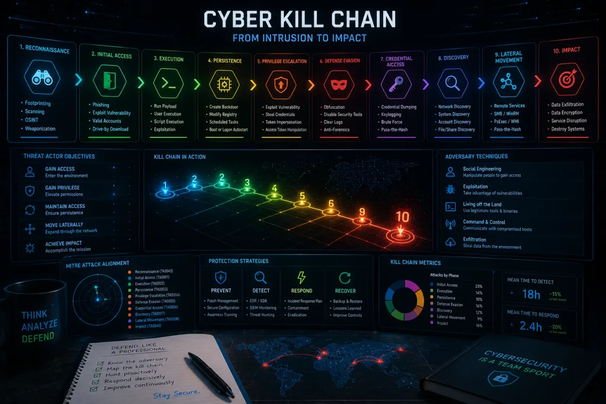

Herramientas de seguridad, cara a cara.
Comparativas reproducibles de las herramientas ofensivas y defensivas sobre las que de verdad discuten los profesionales. Cada puntuación está versionada. Cada plan de pruebas está publicado – nunca hay colocación pagada.

NordVPN vs Surfshark vs Proton VPN: cuál merece la pena en 2026.
Todas las comparativas de VPN existen para colocar un enlace de afiliado. Esta empieza por lo que una VPN no hace, y por el hecho de que dos de las tres empresas son la misma empresa.
Signal vs WhatsApp vs Telegram: cuál es realmente privada en 2026.
Signal y WhatsApp cifran todo por defecto. Telegram no, a menos que sepas buscar los Chats Secretos. Lo que de verdad te protege, y lo que solo lo parece.
Bitwarden vs 1Password vs KeePassXC: cómo elegir gestor de contraseñas en 2026.
Tres respuestas muy distintas a dónde debe vivir tu bóveda. Cifrado de conocimiento cero, código abierto, autoalojamiento y precios reales, comparados.

Nmap vs Masscan: precisión frente a rendimiento bruto.
Un barrido /24, uno /16, y luego un /8 hostil. Dónde la detección de servicios de Nmap se gana sus segundos, y dónde Masscan deja de ser un arma de doble filo.

Burp Suite vs OWASP ZAP: ¿se gana el sueldo?
Ocho apps deliberadamente rotas, ambos proxies siguiendo el mismo guion. Ergonomía de pruebas manuales, superficie de extensiones, y el precio de lo 'gratis'.

Wireshark vs tcpdump: elige la herramienta correcta.
Cuándo recurrir a una GUI, cuándo a una CLI, y cómo hacer que trabajen juntas en una respuesta a incidentes real.

Kali Linux vs Parrot OS: la prueba del uso diario.
La decisión aburrida que cuesta horas: qué distro duele menos como uso diario, no solo para una captura de un CTF.

Metasploit vs Sliver: frameworks de post-explotación en 2026.
Un clásico que envejece frente al retador moderno nativo en Go. Biblioteca de exploits, ergonomía de listeners, y cómo sobrevive cada uno a un EDR afinado.

Splunk vs Wazuh vs ELK: qué SIEM encaja con tu presupuesto.
Tres modelos de coste genuinamente distintos bajo la misma etiqueta de "SIEM". La elección correcta depende del presupuesto y el tamaño del equipo, no de una lista de funciones.

Snort vs Suricata: el otro debate de IDS.
Snort definió el formato de reglas en el que toda la industria sigue escribiendo. Suricata reconstruyó el motor por debajo para el hardware moderno multinúcleo.

Tenable Nessus vs OpenVAS: escáneres cara a cara.
Un feed de plugins comercial y pulido frente a uno libre y comunitario. La diferencia real se nota en la precisión, el tiempo de puesta en marcha y las auditorías.

Burp Suite vs Caido: el proxy nuevo que de verdad es rápido.
Un aspirante en Rust pensado para la velocidad y con interfaz de navegador. Dónde Caido le sigue el ritmo al veterano, y dónde su escáner todavía no llega.